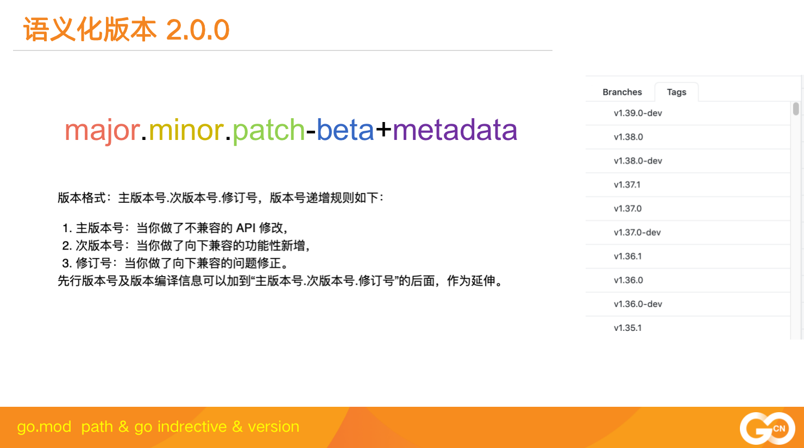
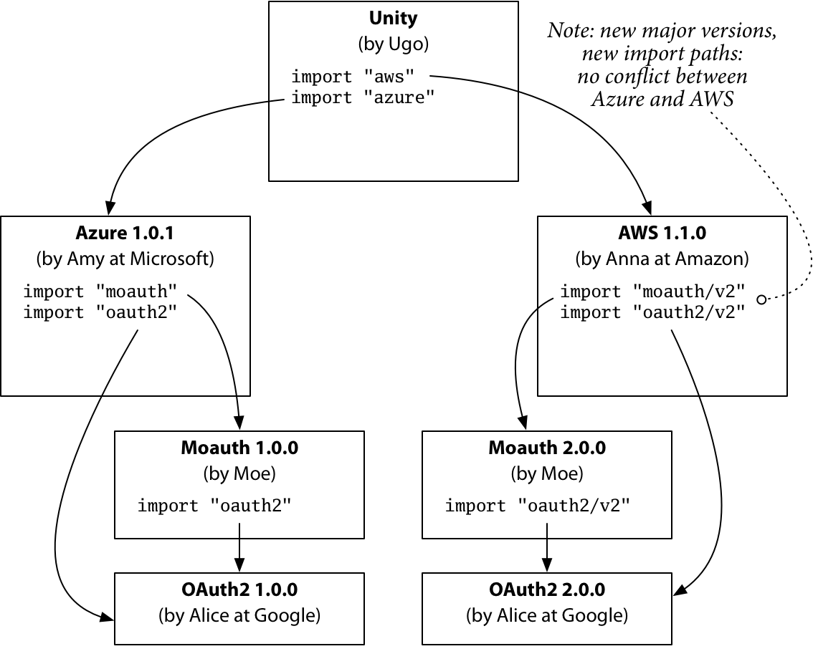

Go module不但遵循语义化版本规范 2.0.0,而且还更进一步，对语义化版本中的major还还赋予了更深的意义。

- v0.X.X: 对于主版本号(major)是0的情况，隐含你当前的API还处于不稳定的状态，新的小版本可能不向下兼容
- v1.X.X: 当前的API处于稳定状态，minor的增加只意味着新的feature的增加，API还是向下兼容的
- v2.X.X: major的增加意味着API已经不向下兼容了
问题： 你知道在go module中，哪些版本号隐含当前API是不稳定的？
但是go module与众不同鹤立鸡群卓然不群的是，一旦你的major大于等于2, 你的module path必须加上v2后缀(如果tag是v3.X.X,那就是v3后缀，以此类推)。
而且，包引用路径也要加上v2，比如 go.etcd.io/etcd/client/v3。
这是一个怪异的写法，相当于在正常的易于理解的module path上加了一个狗屁膏药，以提示这个引入的库是哪个版本的？
为什么要加上这个v2、v2后缀的，肯定有一定的考虑。
最主要的，Go的开发者(这里指Russ Cox)在import compatibility rule指出:
If an old package and a new package have the same import path,
the new package must be backwards compatible with the old package.
也就是相同module path应该保证新的版本向下兼容。

这种想法是好的。比如你在你的项目中可以使用同一个库的多个版本， v1版本处理以前遗留的逻辑，v2版本处理新的逻辑，v3版本试验未来的版本，同一套库的不同版本可以共存，并不会出现版本冲突的地方。
而且程序员看到这些module path,也很清楚的知道版本不兼容了，谁是更新的版本。
但是这种方式也是很有争议的，在实践中中也带来了很多问题，我在开发rpcx深受其害，又比如etcd,你可以看它的v3.4.X的版本，就是因为没有加上v3的后缀，导致go命令下载或者导入(get)这些package的时候根本就下载不了。
vX后缀污染了package path
本来正常的package path一般是仓库路径+package name,或者go module下 module path + package的方式，可是一旦版本大于等于2,就不得不加上一个后缀v2,v3等，将package path的含义改变了。
当然忍一忍我们还能接受，大不了闭着眼睛用呗，最痛苦的很多Go的初学者并不了解这种设置，不知道导入新的库的版本要加v2后缀，一脸茫然。
v0, v1和v2数据类型不兼容
在module path中增加了v2,v3等后缀后，也就以为着这些package都是不同的package，虽然它们中大部分的数据类型并没有做改变，还是向下兼容的，也不能直接赋值，还是需要强转一下。
比如你的项目依赖Auth 1.0.0, 也依赖Auth 2.0.0,那么即使A.Config在两个版本中没做任何改变，你也不能把Auth.Config赋值给Auth/v2.Config,而是需要在代码中加上强转的逻辑，两两互转。一旦发布了v3,那就得三三互转，很长的一个switch分支处理这种情况，如果发布v4，那么逻辑更复杂了。
给第三方库的开发者带来了很大的负担
虽然你觉得我也就发布v2,v3,v4等几个版本，版本路线很清晰，管理起来也不复杂，没什么大不了的。
但是，如果你的库是一个非常流行的库，很多开发者基于你的库开发了第三方的库的话，就非常痛苦了。
这意味着一旦你发布了一个新的版本，这些第三方的开发者就必须及时的更新他们的库，基于你的新的版本发布他们新的v2，v3版本。这就像病毒一样，初步扩展开来。给广大的开发者带来的很大的负担。
当然，见仁见智，这些情况可能你不会遇到，或者也不会给你带来困扰，所以它不是一个问题。而我，在开发rpcx，或者解答一些网友的问题的时候，深深被v2伤害到了,小小的心灵无法承受v2之重。
一些开源项目，为了避免版本号跳到v2,采用了其它的一些办法，比如protobuf-go, 正在做新的版本的重构，改动非常大，不和以前的版本兼容了，可以以前的版本都v1.X.X了，那怎么办呢？换module path名称。
- github.com/golang/protobuf: 支持先前的protobuf go,目前最高版本v1.5.2
- google.golang.org/protobuf: 新版本的module path,目前最高版本v1.27.0，初始版本v1.20.0
对于我开发的rpcx项目，因为在go module出来之前版本号已经发布到了v6.X.X。 我想回到从前，貌似回不去了。所以我采用了一个极端的做法，把tag重建，所有的版本号都定义在v1.X.X内。还好影响的用户比较少，所以也没有用户抱怨。
我这种做法比较极端，没造成用户抱怨的原因是我一直坚持go module和GOPATH并存的方式。发版的时候采用go module发版，master开发分支上采用GOPATH方式，绝大部分用户都使用master分支，或者自己fork了一个新的版本，所以造成的影响很小。